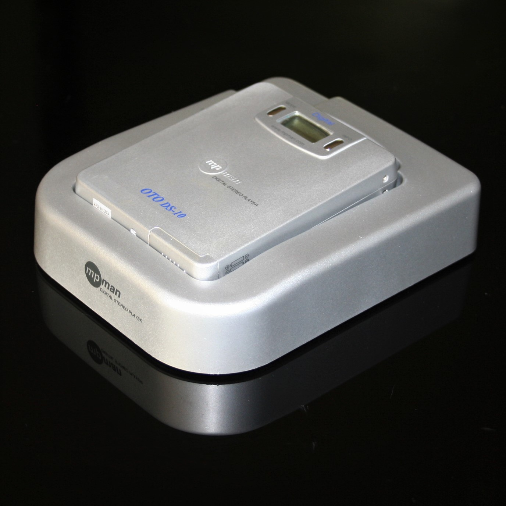
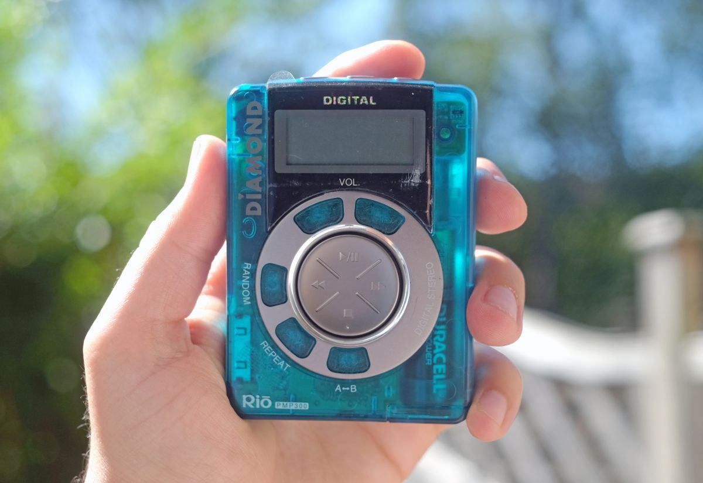
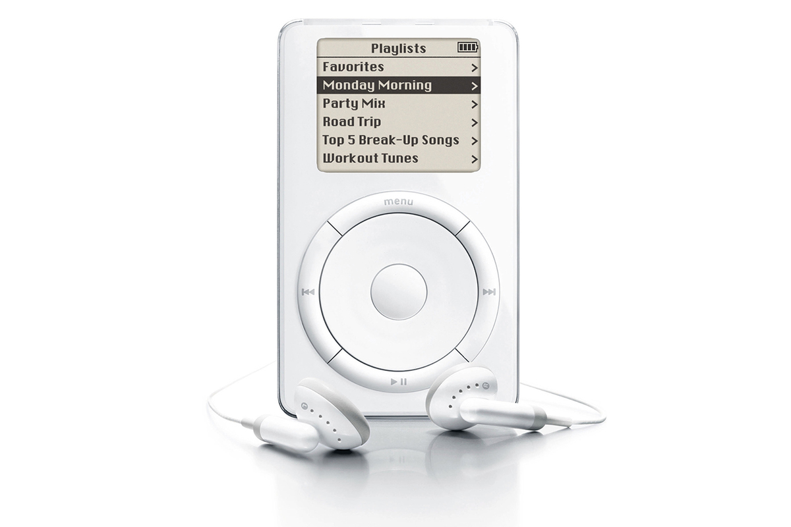

 A data de surgimento dos leitores de MP3 difere em cinco anos da formularização do formato MP3, que foi formularizado em 1993 pelo o grupo Moving Picture Experts Group (MPEG) da Industry Standards Organization(ISO), que tinha como objetivo a definiação de padrões para a compressão e transmissão de áudio e vídeo. Entretanto apenas em 1998 o primeiro MP3 player produzido em massa com memória flash foi fabricado e vendido pela empresa sul coreana SaeHan Information Systems por 599 dólares com o nome de MPman F-10, todavia foi um fracasso comercial, e em pouco tempo já estava fora do mercado por ser muito caro, altamente inconveniente de usar e geralmente muito restritivo.
 O primeiro reprodutor portátil de música MP3 de sucesso veio após poucos meses do fracaso do MPman F-10. O Rio PMP300, produzido pela empresa americana Diamond Multimedia, foi um sucesso pois, vinha com um preço mais acessivel de 200 dolares e podia se conectar facilmente a um computador. Mas logo nos primeiros meses de sucesso, a Recording Industry Association of America (RIAA), uma organização comercial que representa a indústria fonográfica nos Estados Unidos, entrou com uma ação alegando que o dispositivo era cúmplice da cópia ilegal de música, mas Diamond obteve uma vitória legal sobre os ombros da Sony Corporation Universal City Studios e os MP3 players foram considerados dispositivos legais.

Enquanto o Rio PMP300 era uma tentativa louvável de popularizar os tocadores de MP3, o tocador portátil de maior sucesso chegaria três anos depois. Em 2001, a Apple lançou o primeiro iPod e praticamente mudou o cenário mais uma vez, assim como a Sony havia feito em 1979, com o lançamento do Walkman. O iPod foi um dispositivo incrivelmente popular desde o início e teve um grande impacto na indústria em geral.
Por exemplo, os usuários agora podiam carregar milhares de músicas em um único dispositivo portátil e talvez mais importante, as pessoas também podem selecionar músicas individuais em vez de álbuns inteiros. Essa coisa aparentemente simples, junto com a plataforma iTunes, basicamente impulsionou a indústria da música digital.